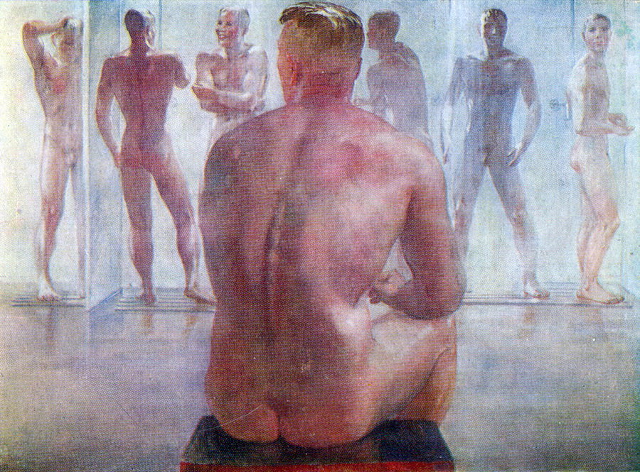

“Can a Homosexual be a Member of the Communist Party?”
A letter to J.V. Stalin
Notes from the Translator
The first page of the letter contains the instruction: “Archive. An idiot and a degenerate. J. Stalin.”
The original Russian text of this letter was published in the journal Istochnik (5/6 (1993): 185–191) under the rubric “Humor from the Secret Archive[s].” Throughout, text in square brackets ([ ]) has been inserted by the translator for clarification and ease of reading.
Notes from HOMINTERN
This is a letter presenting a communist defense of homosexuality from Harry Whyte, a Communist Party of Great Britain member working on the editorial team of the Moscow Daily News, in response to the the USSR’s recriminalization of homosexuality two months earlier in 1934. It is excerpted here as a translation by Thomas Campbell from Moscow, a book of photographs by Yevgeny Fiks documenting the gay cruising sites of Soviet Moscow from the 20s through the 90s. Many thanks to Thomas Campbell, Yevgeny Fiks, and Ugly Duckling Presse for allowing us to reprint it in this issue of HOMINTERN.

H[ARRY] WHYTE TO J.V. STALIN
May 1934
To Comrade STALIN.
The content of my appeal is briefly as follows. The author of this letter, a member of the Communist Party of Great Britain, requests a theoretical grounding of the March 7 decree of the USSR Central Executive Committee on [the institution of] criminal liability for sodomy.Male homosexuality was recriminalized throughout the Soviet Union in 1933–1934. Violation of Article 121 of the Soviet criminal code carried a penalty of five years in prison. The law was not repealed until 1993. For a brief history of this law (including a discussion of Harry Whyte’s letter to Stalin), see Leslie Feinberg, “Can a homosexual be a member of the Communist Party?,” Workers World October 7, 2004.
Since he strives to approach this question from a Marxist viewpoint, the author of this letter believes that the decree contradicts both the facts of life itself and the principles of Marxism-Leninism.
Here is a summary of the facts that are discussed in detail in the attached letter:
On the whole, the condition of homosexuals under capitalism is analogous to the condition of women, the coloured races, ethnic minorities, and other groups that are repressed for one reason or another;
The attitude of bourgeois society to homosexuality is based on the contradiction between:
- capitalism’s need for “cannon fodder” and a reserve army of labour (leading to repressive laws against homosexuality, which is regarded as a threat to birth rates); and b) the ever-growing poverty of the masses under capitalism (leading to the collapse of the working-class family and an increase in homosexuality).
This contradiction can be resolved only in a society where the liquidation of unemployment and the constant growth of the material well being of workers fosters conditions in which people who are normal in the sexual sense can enter into marriage.
Science confirms that an insignificant percentage of the population suffers from constitutional homosexuality.
The existence of this insignificant minority is not a threat to a society under the dictatorship of the proletariat.
The new law on homosexuality has provoked the most various and contradictory interpretations.
The March 7 law fundamentally contradicts the basic principle of the previous law on this question.
The March 7 law essentially calls for “levelling” in the realm of sexual life.
The March 7 law is absurd and unjust from the viewpoint of science, which has proven the existence of constitutional homsexuals and has no means at its disposal to change the sexual nature of homosexuals.
Dear Comrade Stalin:
Although I am a foreign communist who has not yet been promoted to the AUCP(b),The All-Union Communist Party (Bolsheviks). It was renamed the Communist Party of the Soviet Union in 1952.
I nevertheless think that it will not seem unnatural to you, the leader of the world proletariat, that I address you with a request to shed light on a question that, as it seems to me, has huge significance for a large number of communists in the USSR as well as in other countries.
The question is as follows: can a homosexual be considered someone worthy of membership in the Communist Party?
The recently promulgated law on criminal liability for sodomy, which was affirmed by the USSR Central Executive Committee on March 7 of this year, apparently means that homosexuals cannot be recognized as worthy of the title of Soviet citizen. Consequently, they should be considered even less worthy to be members of the AUCP(b).
Since I have a personal stake in this question insofar as I am a homosexual myself, I addressed this question to a number of comrades from the OGPU and the People’s Commissariat for Justice, to psychiatrists, and to Comrade Borodin, the editor-in-chief of the newspaper where I work.Mikhail Borodin (1884–1951) was the alias of Mikhail Gruzenberg, an agent of the Comintern. He was the editor-in-chief of the Moscow (Daily) News (founded by American journalist Anna Louise Strong in 1930) from 1932 to 1949. In 1949, Borodin was arrested as part of the campaign against “cosmopolitans.” According to some sources, he died in a Siberian labour camp in 1951. According to others, he was shot in Lefortovo Prison (Moscow) in 1949. The newspaper was shut down after his arrest, resuming publication only in 1956.
All that I managed to extract from them was a number of contradictory opinions which show that amongst these comrades there is no clear theoretical understanding of what might have served as the basis for passage of the given law. The first psychiatrist from whom I sought help with this question twice assured me (after verifying this with the People’s Commissariat for Justice) that if they are honest citizens or good communists, his patients may order their personal lives as they see fit. Comrade Borodin, who said that he personally took a negative view of homosexuality, at the same time declared that he regarded me as a fairly good communist, that I could be trusted, and that I could lead my personal life as I liked. Somewhat earlier, when the arrests of homosexuals had only just begun, Comrade Borodin was quite disinclined to view me as a potential criminal; he did not regard me as a bad communist, and this was confirmed by the fact that he promoted me at work by appointing me head of editorial staff, which is the highest-ranking supervisory position with the exception of members of the editorial board. Somewhat later, when the December 17 version of the law already existed, but before the March 7 decree, I contacted the OGPU in connection with the arrest of a certain person with whom I had had homosexual relations. I was told there that there was nothing that incriminated me.
All these statements produced the impression that the Soviet organs of justice were not prosecuting homosexuality as such, only certain socially dangerous homosexuals. If this is really the case, then is there a need for the general law?
On the other hand, however, after the law was issued on March 7, I had a conversation in the OGPU in which I was told that the law would be strictly applied to each case of homosexuality that was brought to light.
In connection with the lack of clarity that exists in this matter, I turn to you in the hope that you will find the time to give me an answer.
Allow me to explain to you this question as I understand it.
First and foremost, I would like to point out that I view the condition of homosexuals who are either of working-class origin or workers themselves to be analogous to the condition of women under the capitalist regime and the coloured races who are oppressed by imperialism. This condition is likewise similar in many ways to the condition of the Jews under Hitler’s dictatorship, and in general it is not hard to see in it an analogy with the condition of any social stratum subjected to exploitation and persecution under capitalist domination.
When we analyze the nature of the persecution of homosexuals, we should keep in mind that there are two types of homosexuals: first, those who are the way they are from birth (moreover, if scientists disagree about the precise reasons for this, then there is no disagreement that certain deep-seated reasons do exist); second, there are homosexuals who had a normal sexual life but later became homosexuals, sometimes out of viciousness, sometimes out of economic considerations.
As for the second type, the question is decided relatively simply. People who become homosexuals by virtue of their depravity usually belong to the bourgeoisie, a number of whose members take to this way of life after they have sated themselves with all the forms of pleasure and perversity that are available in sexual relations with women. Amongst those who take to this way of life out of economic considerations, we find members of the petit bourgeoisie, the lumpenproletariat, and (as strange as it might seem) the proletariat. As a result of material necessity, which is particularly aggravated during periods of crisis, these people are forced temporarily to turn to this method of satisfying their sexual urges insofar as the absence of means deprives them of the possibility of marrying or at least contracting the services of prostitutes. There are also those who become homosexuals not in order to satisfy their urges, but in order to earn their keep by means of prostitution (this phenomenon has become especially widespread in modern Germany).
But science has established the existence of constitutional homosexuals. Research has shown that homosexuals of this type exist in approximately equal proportions within all classes of society. We can likewise consider as established fact that, with slight deviations, homosexuals as a whole constitute around two percent of the population. If we accept this proportion, then it follows that there are around two million homosexuals in the USSR. Not to mention the fact that amongst these people there are no doubt those who are aiding in the construction of socialism, can it really be possible, as the March 7 law demands, that such a large number of people be subjected to imprisonment?
Just as the women of the bourgeois class suffer to a significantly lesser degree from the injustices of the capitalist regime (you of course remember what Lenin said about this), so do natural-born homosexuals of the dominant class suffer much less from persecution than homosexuals from the working-class milieu. It must be said that even within the USSR there are conditions that complicate the daily lives of homosexuals and often place them in a difficult situation. (I have in mind the difficulty of finding a partner for the sexual act, insofar as homosexuals constitute a minority of the population, a minority that is forced to conceal its true proclivities to one degree or another.)
What is the attitude of bourgeois society to homosexuals? Even if we take into account the differences existing on this score in the legislation of various countries, can we speak of a specifically bourgeois attitude to this question? Yes, we can. Independently of these laws, capitalism is against homosexuality by virtue of its entire class-based tendency. This tendency can be observed throughout the course of history, but it is manifested with especial force now, during the period of capitalism’s general crisis.
Capitalism, which needs an enormous reserve army of labour and cannon fodder in order to flourish, regards homosexuality as a factor that threatens to lower birth rates (as we know, in the capitalist countries there are laws that punish abortion and other methods of contraception).
Thanks to its wealth, the bourgeoisie can avoid the legal punishment that descends in all its severity on homosexual workers with the exception of those cases when the latter have prostituted themselves to members of the dominant class.
I have already mentioned that capitalism, which has need of cannon fodder and a reserve army of labour, attempts to combat homosexuality. But at the same time, by worsening the living conditions of workers, capitalism produces the objective conditions for an increase in the number of homosexuals who take to this way of life by virtue of material necessity.
Of course, the attitude of the bourgeoisie to the homosexual question is typical hypocrisy. Strict laws are the cause of few nuisances for the bourgeois homosexual. Anyone who is at all familiar with the internal history of the capitalist class knows of the periodic scandals that arise in this regard; moreover, members of the dominant class who are mixed up in these affairs suffer to an insignificant degree. I can cite a little-known fact in this connection. Several years ago, one of the sons of Lord and Lady Astor was convicted of homosexuality. The English and American press omitted to report this fact, with the exception of the Morning Advertiser. This newspaper is owned by beer manufacturers, and it was in its interests to compromise Lord and Lady Astor, who had been agitating for the introduction of prohibition. Thus the fact of [Astor’s conviction] became known thanks to contradictions within the dominant class.
This contradiction is reflected in the fact that fascism, which employed the pederast [Marinus] van der LubbeMarinus van der Lubbe (1909–1934) was the young Dutch council communist accused of setting fire to the German Reichstag on February 27, 1933. He was sentenced to death for the crime and guillotined in Leipzig on January 10, 1934.
as a weapon in its provocation, at the same time brutally suppressed the liberal-intelligentsia “liberation” movement of homosexuals led by Dr. Magnus Hirschfeld.Magnus Hirschfeld (1868–1935) was a German-Jewish physician, sex researcher, and gay rights activist. Whyte probably refers here either to the Scientific Humanitarian Committee, an organization that Hirschfeld co-founded in 1897 to repeal the criminalization of homosexuality in Germany, or to his Institut für Sexualwissenschaft (Berlin). The Nazis attacked the institute on May 6, 1933, and burned many of the books in its library.
(See the Brown Book, which cites the Hirschfeld case as an instance of the anti-cultural barbarism of the fascists.)The Brown Book of the Hitler Terror and the Burning of the Reichstag was a book published by the World Committee for the Relief of Victims of German Fascism in 1933. It was translated into many languages (including Russian) and sold millions of copies worldwide.
Another reflection of this contradiction is the figure of André Gide, French homosexual writer, leader of the antifascist movement, and ardent friend of the USSR. The general public in France knows about Gide’s homosexuality, for he has written about it openly in his books. And despite this, his authority amongst the masses as a fellow traveller of the communist party in France has not been shaken. The fact that Gide has joined the revolutionary movement has not hindered its growth or the support of the masses for the leadership of the communist party. In my view, this shows that the masses are not intolerant of homosexuals.
Praising the “purity of the race” and family values, fascism has taken an even sterner stance against homosexuality than the pre-Hitler government. However, because fascism destroys the working-class family and furthers the impoverishment of the masses, it essentially stimulates the development of the second type of homosexuality I have described – that is, [homosexuality] out of necessity.
The only solution to this contradiction is the revolutionary transformation of the existing order and the creation of a society in which the absence of unemployment, the growing prosperity of the masses, and the liquidation of the family as an economic unit secure the conditions in which no one will be forced into pederasty out of necessity. As for so-called constitutional homosexuals, as insignificant percentage of the population they are incapable of threatening the birth rate in the socialist state.
“Overall results in the growth of material prosperity have led to the fact that, whereas mortality rates have grown along with poverty in the capitalist countries, mortality has decreased and birth rates have increased in the USSR. Compared to the pre-war years, the population in the USSR has grown by a third, while in capitalist Europe it has fallen by ten percent. Today our country with its population of 165 million shows the same population increase as capitalist Europe with its population of 360 million. As you can see, in this matter as well the pace here [in the Soviet Union] is furious (laughter).”
Despite the unusually severe laws on marriage that exist in the capitalist countries, perversion in the realm of normal sexual life is significantly more widespread in the capitalist countries than in the USSR, where the laws on marriage are the freest and more rational than in rest of the world. True, we know that in the first years of the Revolution certain people tried to abuse the freedom provided by the Soviet laws on marriage. However, these abuses were stopped not by repressive measures, but by broad-based political education and cultural work, and by the evolution of the economy towards socialism. I imagine that with respect to homosexuality (of the second type) a similar policy would prove the most fruitful.
I have always believed that it was wrong to advance the separate slogan of the emancipation of working-class homosexuals from the conditions of capitalist exploitation. I believe that this emancipation is inseparable from the general struggle for the emancipation of all humanity from the oppression of private-ownership exploitation.
I had no intention of turning this into a problem, of posing this question theoretically and seeking a definite opinion on this question from the Party. However, at present, reality itself has forced this question on me, and I consider it essential to achieve general clarity on this issue.
Comrade Borodin has indicated to me that the fact that I am homosexual in no way diminishes my value as a revolutionary. He has shown great confidence in me by appointing me the head of editorial staff. Then he did not treat me as someone who might become or was a convicted criminal. He likewise indicated that my personal life was not something that could even in the slightest degree harm my status as a Party member and editorial worker.
When I posed to him the question of the arrests, he once again (and the OGPU through him) assured me that in the given instance the reasons [for the arrests] were political in nature, and not in any way social or moral, although the December 17 variant of the law existed already then. After I made the corresponding request to the OGPU, I was told: “There is nothing incriminating against you.” When I learned of the December 17 variant of the law, I received replies of a similar sort from a number of people. True, Comrade Degot from the People’s Commissariat of Justice said that the reason for the law was that homosexuality was a form of bourgeois degeneracy.
The specialist psychiatrist with whom I spoke about this matter refused to believe in the existence of such a law until I showed him a copy of it.
Despite the existence of a number of incorrect interpretations on the part of certain comrades, it is completely obvious that in the period preceding the promulgation of the law, public opinion on this question was nevertheless not in the least hostile to homosexuals. And this did not surprise me at all.
I accepted the arrests of homosexuals as a wholly natural phenomenon insofar as the occasion [for the arrests] were reasons of a political nature. As I have already mentioned, this was all wholly in line with my own analysis of the question (as stated above), and in exactly the same way it did not contradict the officially expressed viewpoint of the Soviet public. Comrade Borodin pointed out to me that I should not attach too much significance to the article on homosexuality in the Great Soviet Encyclopaedia because (he said) its author was a homosexual himself and the article was published during a period when a number of deviations had still not yet been exposed. I do not think we should mistrust a history of the Communist Party if a communist wrote it. If a homosexual in fact wrote this article, then all that was required of him was an objective and scientific approach to homosexuality. Second, I know enough about the efficacy of Soviet political control of the press that I cannot admit the possibility that an article with serious deviations could be printed in such a publication as the Great Soviet Encyclopaedia. If this is possible when it comes to individual articles in some insignificant journal or newspaper, then it is not possible in the Great Soviet Encyclopaedia. In any case, I thought it possible to have full confidence in a publication whose editors include such people as Molotov, Kuibyshev, and Pokrovsky (or even Bukharin, although he deserves less confidence).
However, from the point of view that I am defending, the article in the Great Soviet Encylopaedia was of no great significance. The attitude of the Soviet public to this question was expressed with sufficient clarity in the law that existed right up until the adoption of the March 7 law. If the law had said nothing about this question, then doubts might have existed earlier. But the law in fact did formulate an opinion on this question: it defended the interests of society by forbidding the seduction and perversion of minors. But this led one to conclude that homosexual relations between adults were not forbidden.
The law, of course, is dialectical: it changes as circumstances change. It is obvious, however, that when the first law was ratified, the entire question of homosexuality was taken into account as a whole (this, at any rate, is what one might think on the basis of the conclusion that followed from the law). This law established that the Soviet government altogether rejected the principle of persecuting homosexuality. This principle is fundamental in character, and we know that basic principles are not altered in order to bring them into line with new circumstances. Altering basic principles for such ends means being an opportunist, not a dialectician.
I am capable of grasping that changed circumstances also require certain partial changes in the legislation, the application of new measures for the defence of society, but I cannot understand how changed circumstances can force us to change one of [our] basic principles.
I visited two psychiatrists in the search for an answer to the question of whether it was possible to “cure” homosexuality – perhaps you will find this surprising. I admit that this was opportunism on my part (this time, perhaps, it can be forgiven), but I was incited to do this by the desire to find some kind of solution to this cursed dilemma. Least of all did I want to contradict the decision of the Soviet government. I was prepared to do anything if only to avoid the necessity of finding myself in contradiction with Soviet law. I took this step despite the fact that I did not know whether contemporary researchers had succeeded in establishing the true nature of homosexuality and the possibility of converting homosexuals into heterosexuals – that is, into people who engage in the sexual act only with members of the opposite sex. If such a possibility were in fact established, then everything would be much simpler of course.
But, frankly speaking, even if this possibility were established, I would be uncertain all the same how desirable it was in fact to convert homosexuals into heterosexuals. Of course, there might be certain political reasons that would make this desirable. But I imagine that the necessity for such a levelling procedure should be supported by unusually strong reasons.
It is no doubt desirable that the majority of people be normal in the sexual sense. I fear, however, that this will be never be the case. And I think that my fears are confirmed by the facts of history. I think that one can say with certainty that the majority of people desire and will continue to desire a normal sexual life. However, I greatly doubt in the possibility of all people becoming utterly identical in terms of their sexual proclivities.
I remind you that homosexuals constitute a mere two percent of the population. You should also remember that amongst those two percent there were such exceptionally talented people as Socrates, Leonardo da Vinci, Michelangelo, Shakespeare, and Tchaikovsky. These are the ones about whom we know that they were homosexuals. But how many other such talented people have there been amongst homosexuals who hid their true proclivities? I have no intention of defending the absurd theory that homosexuals belong to a breed of superhumans, that homosexuality and genius are synonyms, that homosexuals will, allegedly, someday take their revenge on society for their sufferings by uniting to conquer heterosexuals. “Theories” of this ilk were already condemned with considerable contempt (as they deserved to be) by Engels in his letter to Marx from June 22, 1869. In this letter, Engels writes about the “theory” advanced by a clique of German bourgeois homosexuals who had formed their own special organization. Engels characterizes this whole affair with the epithet “swinishness” (schweinerei).
That it was precisely the political “theory” of the organization, not the specific sexual orientation of its members, that aroused the ire of Engels, can be seen in his letter to [Friedrich] Sorge from February 8, 1890. Engels writes:
“Here there is another storm in a teacup under way. You’ll read in the Labour Elector about the brouhaha provoked by Peake [?], assistant editor of the Star, who in one of the local papers openly accused Lord Gaston of sodomy in connection with the scandalous homosexuality of the local aristocracy. The article was disgraceful, but was only of a personal nature; the matter was hardly political.”
“The matter was hardly political.” The fact that Engels regards the case of a member of the enemy class who was accused of sodomy and caused a scandal in the aristocratic world as “hardly political,” as “storm in a teacup,” is of great and fundamental significance to us. If homosexuality is viewed as a characteristic trait of bourgeois degeneracy, then it is correct to attack its individual manifestations, especially during a period when homosexual scandals were widespread in the aristocratic milieu. However, it follows from the quotation that Engels did not view homosexuality as a specifically bourgeois form of degeneracy. He attacked it only when (as, for example, in cases involving Germany) it adopted the political form of an association of certain bourgeois elements. When, on the other hand, the matter had no political overtones (as in the case cited above), Engels did not find it necessary to attack it.
I assume that certain kinds of talent (in particular, talent in the realm of the arts) are startlingly often combined with homosexuality. This should be kept in mind, and it seems to me that one should carefully weigh the dangers of sexual levelling precisely for this branch of Soviet culture, for at present we do not as yet possess a sufficiently scientific explanation of homosexuality.
I will permit myself to cite one passage from Comrade Stalin’s report to the Seventeenth Party Congress:
“[A]ny Leninist knows, if he is a genuine Leninist, that levelling in the realm of needs and personal daily life is a reactionary absurdity worthy of some primitive sect of ascetics, not of a socialist state organized in the Marxist manner, for one cannot require that all people should have identical needs and tastes, that all people live their daily lives according to a single model. […]
“To conclude from this that socialism requires the egalitarianism, equalization, and levelling of the needs of society’s members, the levelling of their tastes and personal lives, that according to Marxism everyone should wear identical clothes and eat the same quantity of one and the same dishes, is tantamount to uttering banalities and slandering Marxism.”
It seems to me that this excerpt from Comrade Stalin’s report has a direct bearing on the question that I am analyzing.
What is important, however, is that even if one pursues this levelling in the present, it is impossible to achieve it either with medical or legislative methods.
When both psychiatrists whom I visited were forced by my insistent questions to confess that cases of incurable homosexuality exist, I finally established my own attitude to the question.
One should recognize that there is such a thing as ineradicable homosexuality – I have yet to encounter facts that would refute this – and hence as a consequence, it seems to me, one should recognize as inevitable the existence of this minority in society, be it a capitalist or even a socialist society. In this case, one cannot find any justification for declaring these people criminally liable for their distinguishing traits, traits for whose creation they bear no measure of responsibility and which they are incapable of changing even if they wanted to.
Thus, attempting to reason in accordance with the principles of Marxism-Leninism as I understand them, I have arrived in the end at the contradiction between the law and those conclusions that have followed from my line of reasoning. And it is just this contradiction that compels me to desire an authoritative statement on this question.
Communist greetings,
HARRY WHYTE
My address: Bolshoi Afanasievskii, no. 5, apt. 11; tel: 3-34-33
Office: Petrovskii pereulok, no. 8, “Moscow Daily News”; tel: 2-58-71, 3-33-26
INFORMATION ABOUT THE AUTHOR OF THE LETTER.
Whyte, Harry. 27 years old. Born in Edinburgh, Scotland. Son of a working-class painter who recently acquired his own business. Secondary school education. Journalist by profession. Worked for bourgeois newspapers until 1932. Worked in his free time for the journal of the USSR Friends Society, Russia Today (from 1931 to 1932). Joined the Independent Labour Party in 1927; the Communist Party of Great Britain, in 1931. Assisted in the organization of party cells and district organizations on Fleet Street, the center of the British press. In 1932, was hired onto the staff of the Moscow News (Moskovskie Novosti). In 1933, was appointed head of the editorial staff of this newspaper. Singled out as best shock worker. Promotion to the AUCP(b) from the Communist Party of England [sic] has been postponed until completion of the Party purge.
NB. The arguments set forth in the attached letter were originally formulated by me in a letter to Comrade Borodin, managing editor of the Moscow Daily News, in the hope that he would direct Comrade Stalin’s attention to the question that I broach. However, he deemed it impossible to do this. Aside from what is stated in the present letter, the letter addressed to Comrade Borodin also contains certain facts that concern me personally and have on the whole no great bearing on the question under consideration, but which, however, I deemed necessary to bring to his attention. A copy of this letter has been presented to the OGPU at their request insofar as I informed one comrade in the OGPU about this letter.
AP RF [Archive of the President of the Russian Federation], f. 3, op. 57, d. 37, l. 29–45; notarized copy.
Translated, from the Russian, by THOMAS CAMPBELL, as originally published in Yevgeniy Fiks, Moscow (Brooklyn: Ugly Duckling Presse, 2013). Campbell is the editor of the Russian Reader, which covers grassroots politics and culture in Russia, including LGBT movements and the struggle against official and everyday homophobia.